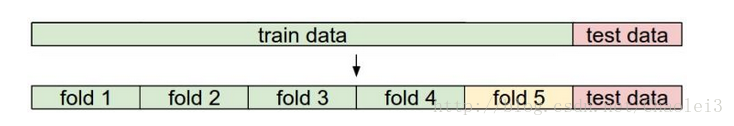

评价与修正机器学习算法的一些方法
评价模型
对于回归问题, 利用测试数据计算代价函数, 例如
代价函数越小, 则说明模型越好.
对于分类问题, 定义一个误差函数, 表明分类错误的情况
最终的代价函数为
代价函数越小表示分类错误越少, 模型越好
训练集 交叉验证集 测试集
训练集用于计算代价函数, 利用梯度下降等方法, 来找到使代价函数最小的参数
交叉验证集验证用于模型的选择，更具体地来说，验证集并不参与学习参数的确定，也就是验证集并没有参与梯度下降的过程。验证集只是为了选择超参数，比如网络层数、网络节点数、迭代次数、学习率这些都叫超参数。比如在k-NN算法中，$k$值就是一个超参数。所以可以使用验证集来求出误差率最小的$k$。

图上面的部分表示我们拥有的数据，而后我们对数据进行了再次分割，主要是对训练集，假设将训练集分成5份（该数目被称为折数，5-fold交叉验证），每次都用其中4份来训练模型，粉红色的那份用来验证4份训练出来的模型的准确率，记下准确率。然后在这5份中取另外4份做训练集，1份做验证集，再次得到一个模型的准确率。直到所有5份都做过1次验证集，也即验证集名额循环了一圈，交叉验证的过程就结束。算得这5次准确率的均值。留下准确率最高的模型，即该模型的超参数是什么样的最终模型的超参数就是这个样的。
测试集仅在最后作为评估模型训练结果时使用, 不参与训练与交叉验证
Bias and variance
两种错误的诊断
当多项式次数过低, 就会导致对数据的拟合程度差, 导致欠拟合
随着增加多项式次数, 训练误差会逐渐减小, 但是在超过某个最佳值时, 会导致交叉验证误差上升, 也就是拟合程度过高, 泛化能力差, 导致过拟合

规格化项与两种错误

上图中的规格化项应为
$m$为数据组数, $n$为参数个数
过大的$\lambda$导致误差函数总是很大, 造成欠拟合
过小的$\lambda$相当于没有这个规格化项, 会造成过拟合
学习曲线
训练集的大小对与上述两个问题也有影响


对于神经网络
参数较少 - 可能会欠拟合 - 计算量小
参数较多 - 可能会过拟合 - 计算量大 - 利用规格化项增加$\lambda$可以解决过拟合
总结
| High Bias | High Variance | |
|---|---|---|
| 表现 | 欠拟合 | 过拟合 |
| 原因 | 多项式次数低 / 规格化项参数大 | 多项式次数高 / 规格化项参数小(接近0) |
| 训练误差$J_{train}(\Theta)$ | 高 | 低 |
| 交叉验证误差$J_{CV}(\Theta)$ | 高 | 高 |
| 随着训练集的增大 | 测试误差下降, 训练误差升高, 最后两者相仿, 高于期望的错误率 | 测试误差下降, 训练误差升高, 最后两者仍有区别, 但训练误差接近于期望的错误率 |
| 解决方法 | 更多特征 / 高次数的多项式 / 减少$\lambda$ | 更多训练数据 / 更少的特征 / 增加$\lambda$ |
| 低复杂度 | 高复杂度 |
|---|---|
| high bias | low bias |
| low variance | high variance |